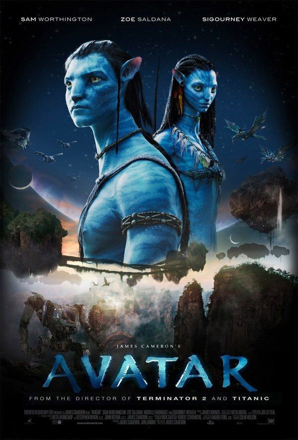
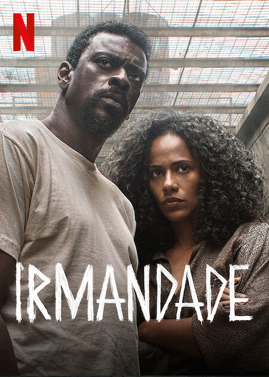

Lançamentos mais esperados do ano!!!
Avatar: The Way of Water é um futuro filme épico de ficção científica americano
co-escrito, co-editado, co-produzido e dirigido por James Cameron, e produzido pela 20th Century
Studios, com sua data de lançamento prevista para 16 de dezembro de 2022.

Anunciado oficialmente pela Marvel em 2019, Thor: Love and Thunder é um dos filmes mais
esperados pelos fãs do MCU (Universo Cinematográfico Marvel). Seguindo os eventos de Vingadores:
Ultimato, o longa levará o Deus do Trovão novamente ao espaço em uma aventura épica. Com o retorno do
diretor Taika Waititi, que comandou Thor: Ragnarok, o longa tem a responsabilidade de seguir o legado de
um dos poucos sobreviventes ao embate contra Thanos.
Ambientada na cidade de São Paulo em meados dos anos 90, Irmandade é uma série que acompanha a história de Cristina (Naruna Costa). Ela é uma advogada honesta e dedicada que descobre o envolvimento do irmão Edson (Seu Jorge) com uma facção criminosa em ascensão, mais conhecida como a ‘Irmandade’. Edson é o líder do grupo e está preso, fazendo com que Cristina seja pressionada pela polícia para ser uma informante e ir contra o seu irmão, alguém que ela não encontra há muito tempo.
